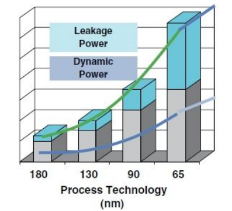

Power and Wrap Up
- Chapter 3 (3.6)
Power Basics
Power vs Energy
-
Power = Energy/Time
-
Watt = Joule/Sec
-
Energy is the integral of power
Power vs Energy: What to optimize
- Maximize battery life -> minimize energy consumption
- Minimize heat -> minimize peak power draw
Power Consumption
CMOS Invertor: Power Analysis
- In steady state, there is no path between power supply (Vdd) and ground hence, there is no power consumption.
- Power is consumed only during input/output transitions.
Dynamic Power
- Power consumed by circuit while doing some (useful) activity. (This is what we have seen so far)
- : activity factor
- : frequency
- : capacitance
- : supply voltage
Static Power
- Power consumed by circuit while doing nothing.
- Transistors leak even when they are in off state.
- Sub-threshold leakage
- Gate leakage
- Junction leakage
Dynamic vs Static Power Distribution
- Static power dominates overall power consumption in smaller technology nodes:
- Leakage increase

Hardware Techniques to Reduce Power
Reducing energy consumption
- Hardware techniques
- Clock gating
- Power gating
- ...
- Software techniques
- Sleep modes
- Dynamic voltage and frequency scaling (DVFS)
- ...
Clock Gating
-
Digital circuits typically change stage only on the rising/falling edge of clock
-
Idea: turn off clocks to the circuits not in use
-
Power Gating
-
Digital circuits consume power even when frequency is 0 due to leakage
-
Idea: turn off power supply to the circuits not in use
- No power no leakage
-
Power Gating Overhead
- Energy overhead: Energy required to power-down and then power-up a unit
- Energy saved by power gating should be more than the overhead of power gating.
- Performance overhead: Time required for a unit to be fully activated before it can be used
- The overhead has to be paid every time a unit is power gated.
Clock/Power Gating Summary
- Turn off clock/power to the circuit not in use
- A complex chip can have multiple clock domains
- Each domain has it’s own clock distribution network
- Each domain can be gated independent of others
- A chip can also have multiple power domains
- Each domain with it’s own power distribution network and gating circuit.
Software Techniques to Reduce Power
Operating System Power Management
- Hardware provides multiple power modes
- OS can exploit them to reduce power consumption without missing deadlines.
- Sleep modes provide maximum power saving
- Similar to power gating, though controlled by OS, not by hardware
- There is an overhead on entering and exiting the sleep modes
- Multiple levels to trade-off the overhead and power savings
DVFS
- Dynamic Voltage and Frequency Scaling
- OS can choose among multiple voltages and frequencies
- Reducing frequency reduces dynamic power consumption
- How about energy?
- Reducing voltage reduces both dynamic and static power consumption
- OS needs to adjust voltage and frequency such that the CPU runs just fast enough